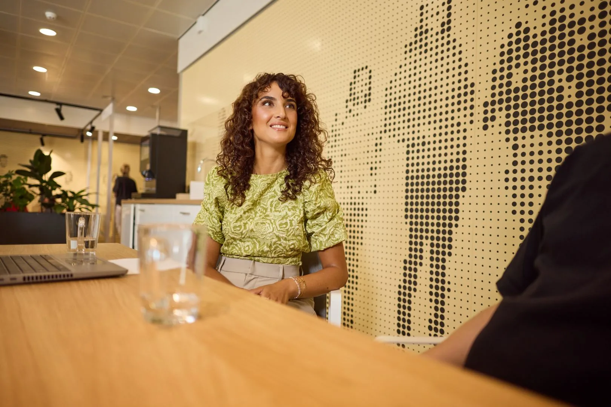
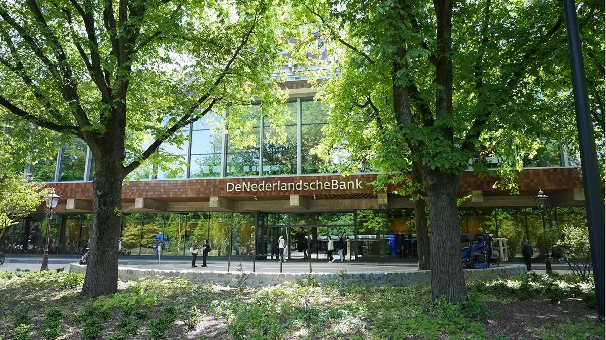
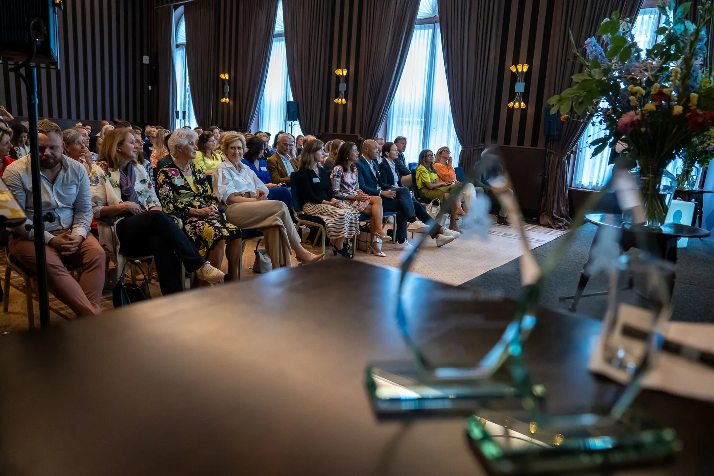
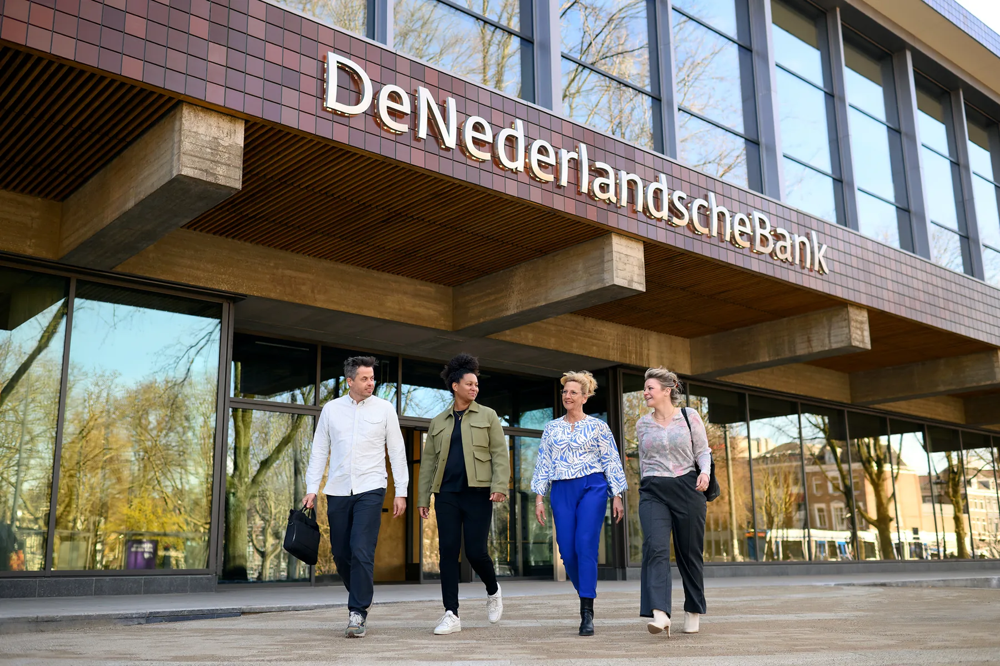

↓ scroll
Het Charter
Het doel van het Charter Talent naar de Top is “een hogere instroom, doorstroom en behoud van vrouwelijk talent in topfuncties”. Door te tekenen committeren organisaties zich aan meetbare doelstellingen en laten ze zich elk jaar monitoren op de behaalde resultaten.
Wat de monitor meet
De jaarlijkse monitor onderzoekt het aandeel vrouwen op drie niveaus — de top, de subtop en de hele organisatie — en analyseert de inspanningen die organisaties leveren om de doorstroom naar de top te stimuleren.
De respons over 2025
Sinds 2008 tekenden 281 organisaties het charter, met in totaal 299 organisatieonderdelen. Voor de monitor over 2025 vroegen we 93 organisaties de tool in te vullen — 75 deden dat, een respons van 81%.
Hieronder volgt een overzicht van de belangrijkste resultaten.
de beweging naar de top
instroom doorstroom behoud
van brede instroom via doorstroom naar behoud in de top — meetbaar gemaakt.
drie niveaus, jaarlijks gevolgd
de top zit ín de subtop, de subtop ín de organisatie — alle drie gemeten.
81%
75 van de 93 gevraagde organisaties vulden de monitoringtool in
Na bijna twee decennia heeft Talent naar de Top de jaarlijkse monitor in een nieuw jasje gestoken. Weliswaar is de vorm anders, maar het wezen van het monitorproces blijft hetzelfde: kijken hoe de aantallen vrouwen in de top van het Nederlandse bedrijfsleven en in de publieke sector zich ontwikkelen en in hoeverre de bij het Charter aangesloten organisaties hun voornemens weten te realiseren.
Hoe uitgekauwd die zinsnede inmiddels ook mag zijn, meten blijft weten. Bijna twee decennia meten leert ook dat stoppen met meten gemakkelijk tot een terugval leidt.
Aandacht voor het aandeel vrouwen in RvBs en RvCs is nog niet overal zodanig verankerd en intrinsiek gemotiveerd dat het bij het vervullen van een vacature in de top automatisch goed gaat, in die zin dat vrouwen voldoende gezien worden en kansen krijgen. Dus moeten we de druk op de ketel houden en blijven meten, maar net als thuis hebben we de kwikthermometer inmiddels door een digitale vervangen.
Joop SchippersVoorzitter Commissie Monitoring Talent naar de Top
In de top
De gestage groei van het aandeel vrouwen in de top van charterorganisaties zet zich ook in 2025 voort: het stijgt met 1,7 procentpunt naar 36,4% eind 2025.
In de subtop
In de subtop neemt het aandeel vrouwen met 0,2 procentpunt licht af, naar 40,7% — vrijwel stabiel ten opzichte van vorig jaar.
In de hele organisatie
In de totale organisatie blijft het aandeel vrijwel gelijk en staat nu op 46,6% — van de drie niveaus het dichtst bij pariteit.
Streefcijfer
Charterorganisaties stellen streefcijfers vast voor het percentage vrouwen dat zij binnen een termijn in de top willen realiseren — gemiddeld ligt dat ieder jaar iets boven het werkelijke aandeel.
36,4%
Drie niveaus
Bron: Monitor Talent naar de Top 2025 · top, subtop en organisatie · 2024–2025 · n=70.
Raad van bestuur
Ieder jaar leggen we de resultaten naast die van bedrijven die moeten voldoen aan de Wet Ingroeiquotum en streefcijfers. Charterorganisaties zitten daar altijd ruim boven. In de rvb stijgt het aandeel vrouwen met 2,1 procentpunt naar 34,1% in 2025.
Raad van commissarissen
In de rvc loopt het aandeel vrouwen verder op, met 1,1 procentpunt naar 43,9% — het hoogste van de drie organen.
Raad van toezicht
Alleen in de rvt zakt het aandeel: met 1,0 procentpunt naar 42,5%. Ook dan blijft het bestuur als geheel dicht bij een evenwichtige samenstelling.
34,1%
Drie bestuursorganen
Figuur 2 · Aandeel vrouwen in rvb, rvc en rvt, 2024–2025 (n=70).
De andere helft
De cijfers vertellen de helft van het verhaal. De monitor weegt óók de inzet: hoeveel werk maken organisaties van hun m/v-diversiteitsbeleid?
Zes dimensies
Dat beleid wordt gescoord op zes dimensies — van leiderschap tot klimaat. Stuk voor stuk terreinen waarvan onderzoek laat zien dat ze het aandeel vrouwen in de top vergroten.
Allemaal effect
En ze tellen allemaal mee: uit onderzoek naar de zes dimensies blijkt dat elk ervan bijdraagt aan een hoger aandeel vrouwen in de top.
Vrijwel gelijk
Het realisatieniveau in 2025 is nagenoeg gelijk aan 2024. Beleid beweegt langzaam — de winst zit in de volharding.
Leiderschap is het verst ontwikkeld. Uit onderzoek blijkt dat effectief leiderschap cruciaal is voor het succes van organisaties. Het leidt ook tot een hoger aandeel vrouwen in de top.
Organisaties over M/V-diversiteitsmanagement
Hoe kunnen we versnellen, ook als er veel druk staat op de organisatie?
Hoe kunnen we het effect van specifieke HR initiatieven meten op hun impact op m/v-diversiteit?
Hoe zorgen we ervoor dat we het opgebouwde draagvlak behouden?
Organisaties over M/V-diversiteitsmanagement
Hoe kunnen we versnellen, ook als er veel druk staat op de organisatie?
Hoe kunnen we het effect van specifieke HR initiatieven meten op hun impact op m/v-diversiteit?
Hoe zorgen we ervoor dat we het opgebouwde draagvlak behouden?
Bron: Monitor Talent naar de Top 2025 · m/v-diversiteitsbeleid · n=75 · schaal 0–4.

FOTOUWVDiamond Award · M/V-diversiteit
UWV
We zijn heel trots op deze award! UWV wil een afspiegeling zijn van de samenleving, daarin heeft iedereen een verantwoordelijkheid. We gaan nu met nog meer gedrevenheid verder met onze aanpak richting gelijke verdeling vrouw/man in de top.
Liesbeth van de Garde · Manager HRM Diversiteit en Inclusie, UWV
D&I
Waar diversiteit gaat over de representatie van verschillende sociale en culturele groepen in de organisatie, gaat inclusiviteitsbeleid over het actief opnemen, inzetten en integreren van diversiteit in de organisatie.
Zes dimensies
Omdat beide begrippen nauw samenhangen — geen diversiteit zonder inclusie, maar ook geen inclusie zonder diversiteit — worden ze samen D&I genoemd. De monitor volgt inclusiviteit daarom langs dezelfde zes dimensies.
Kleine verschillen
M/V-diversiteitsbeleid scoort op alle dimensies iets hoger dan inclusiviteitsbeleid. De verschillen zijn klein: het beeld is vooral dat beide beleidslijnen dicht bij elkaar liggen.
Geen verband met de top
Uit onderzoek blijkt dat het realiseren van inclusiviteit in de organisatie niet samenhangt met het aandeel vrouwen in de top. Een hogere inclusiviteitsscore leidt dus niet vanzelf tot meer vrouwen bovenin.
Bron: Monitor Talent naar de Top 2025 · inclusiviteits- en m/v-diversiteitsbeleid · schaal 0–4.
De code · sinds 2015
Sinds 2015 voert Talent naar de Top een Executive Search Code. Bureaus die de ESC ondertekenen verbinden zich aan negen principes voor de werving, selectie en benoeming van vrouwen in topposities — en laten zich daarop monitoren.
Op de lijst
Het gemiddeld streven voor het aandeel vrouwen op de longlist en shortlist ligt met 47% iets onder de afgesproken 50%. Het daalt langzaam: van 51% in 2023, 48% in 2024 naar nu 47%.
Bij de plaatsing
Bij de daadwerkelijke plaatsingen blijft het achter: 44% van alle plaatsingen was vrouw. Het verschil zit vooral in de rvb, waar het aandeel zakt naar 41% — terwijl rvc/rvt op 48% blijft.
Searchbureau · bij de opdracht
Wanneer culturele diversiteit geen concreet doel is, weegt het beperkt mee in de besluitvorming.
Searchbureau · bij de opdracht
Wanneer culturele diversiteit geen concreet doel is, weegt het beperkt mee in de besluitvorming.
Biculturele kandidaten
We vroegen bureaus of opdrachtgevers vragen om kandidaten met een biculturele achtergrond. Iets meer dan de helft — 11 bureaus — zegt: meestal niet, of nooit. Tot 2024 gold dat nog voor de meerderheid.
Searchbureau · interpretatie
Soms is sprake van communicatiestijlen die onjuist worden geïnterpreteerd.
Searchbureau · interpretatie
Soms is sprake van communicatiestijlen die onjuist worden geïnterpreteerd.
Zelf aankaarten
Andersom brengen de bureaus het zélf wél op: bijna alle bureaus — 18 van de 19 — kaarten culturele diversiteit altijd of meestal aan bij hun opdrachtgevers. Eén doet dat niet.
Searchbureau · kandidaatmarkt
We zien een duidelijke toename van het aanbod van geschikte kandidaten.
Searchbureau · kandidaatmarkt
We zien een duidelijke toename van het aanbod van geschikte kandidaten.
9
plaatsingen vrouw in 2025 — rvb daalt naar 41%
Van lijst naar plaatsing
Bron: naleving Executive Search Code · 2023–2025. Schaal 35–55% voor leesbaarheid.
Searchpraktijk
11 bureaus zeggen: opdrachtgevers vragen meestal niet om biculturele kandidaten.
18 van de 19 bureaus kaarten culturele diversiteit zélf aan.
Bron: naleving Executive Search Code · kwalitatieve vragen. Biculturele kandidaten: 11 van 19 bureaus zeggen dat opdrachtgevers meestal niet of nooit vragen; de rest meestal wel. Zelf aankaarten: 6 altijd, 12 meestal, 1 niet.
Diamond Award · Executive Search Code
ADJ
Diversiteit is voor ADJ geen afzonderlijk programma, maar een vanzelfsprekend onderdeel van onze executive search. We geloven dat organisaties betere besluiten nemen wanneer verschillende perspectieven, ervaringen en achtergronden aan tafel vertegenwoordigd zijn. Deze award is een waardering voor onze opdrachtgevers, kandidaten en collega’s die iedere dag laten zien dat kwaliteit en diversiteit elkaar versterken. Dat is waar ADJ voor staat: Zie meer, kom verder!
Met trots ontvangt ADJ de Executive Search Award van Talent naar de Top. Een mooie erkenning voor de manier van werken die al meer dan zestien jaar centraal staat in onze praktijk: maatschappelijke organisaties versterken door leiders te vinden die het verschil maken.
Wij geloven dat de kwaliteit van bestuur, management en toezicht van directe invloed is op organisaties en daarmee ook de samenleving. Daarom gaat executive search voor ons verder dan het invullen van een vacature.
Dit motiveert ons elke dag om verder te bouwen aan een brede kandidatenpool en te investeren in nieuwe netwerken. Door juist die talenten zichtbaar te maken die nog te vaak buiten beeld blijven, willen we opdrachtgevers helpen teams samen te stellen die elkaar versterken.
Als ondertekenaar van de Executive Search Code voelen we ons extra gemotiveerd opdrachtgevers te adviseren over selectie op basis van kwaliteit, potentieel en toegevoegde waarde, in plaats van herkenning of gewoonte.
ADJ · ondertekenaar van de Executive Search Code
Sinds 2018
Sinds 2018 monitort het Charter óók culturele diversiteit in de top, analoog aan de aanpak van de monitor voor m/v-diversiteit. Deelnemende organisaties zijn pioniers en de monitorresultaten worden gebruikt om van elkaar te leren. Deelnemers zijn zeer gecommitteerd aan het belang van diversiteit.
Organisatie over culturele diversiteit
Wij zien diversiteit als een gegeven en als belangrijke drijfveer voor succes.
Organisatie over culturele diversiteit
Wij zien diversiteit als een gegeven en als belangrijke drijfveer voor succes.
Het kwantitatieve deel
In het kwantitatieve deel van de monitor culturele diversiteit wordt organisaties gevraagd naar het aandeel werknemers met een andere culturele achtergrond in de top, in de subtop, in de organisatie én in de rvb en rvc/rvt. Talent naar de Top hanteert hiervoor de definitie van het CBS uit 2022.
Streefcijfers
Cijfers verzamelen over culturele diversiteit is lastig, maar het lukt organisaties steeds beter. De meeste organisaties hanteren een streefcijfer voor het aandeel werknemers met een andere culturele achtergrond in de top, maar nog niet álle organisaties. Ook het aandeel medewerkers in de top varieert sterk tussen organisaties. Maar hoe hoger in de organisatie, hoe kleiner het aandeel. Een vergelijking tussen jaren is niet zinvol vanwege het kleine aantal deelnemers.
Organisatie over culturele diversiteit
Door kansen te bieden zijn wij ook een aantrekkelijke werkgever die ruimte geeft aan mensen met verschillende achtergronden.
Organisatie over culturele diversiteit
Door kansen te bieden zijn wij ook een aantrekkelijke werkgever die ruimte geeft aan mensen met verschillende achtergronden.
Ook de inzet
De monitor weegt óók de inzet, net als bij m/v-diversiteit. Hoeveel werk maken organisaties van hun culturele diversiteitsbeleid? Dat wordt gescoord op de zes dimensies die we kennen, van leiderschap tot klimaat.
Organisatie over culturele diversiteit
De grootste blokkade is het duurzaam verankeren van culturele diversiteit in alle lagen van de organisatie.
Organisatie over culturele diversiteit
De grootste blokkade is het duurzaam verankeren van culturele diversiteit in alle lagen van de organisatie.
Ontwikkelingsniveau
‘Leiderschap’ is het verst ontwikkeld, vergelijkbaar met voorgaande monitoringjaren en net zoals bij m/v-diversiteit en inclusiviteit. Het ontwikkelingsniveau van de verschillende dimensies van beleid is over de gehele linie lager dan bij de m/v-monitor.
Bron: Monitor Talent naar de Top 2025 · cultureel-diversiteitsbeleid.
Diamond Award · Culturele diversiteit
De Nederlandsche Bank
Het doel van DNB is om te werken aan vertrouwen door financiële stabiliteit te waarborgen en bij te dragen aan duurzame welvaart. Daarvoor zet de organisatie zich in voor een stabiel financieel stelsel, betrouwbare instellingen en het tijdig signaleren en beheersen van risico’s.
Om dit scherp en betrouwbaar te doen, is het belangrijk dat DNB goed aansluit op de samenleving die zij dient. Verschillende achtergronden en perspectieven helpen om risico’s eerder te herkennen, betere besluiten te nemen en de kwaliteit van analyses en toezicht te versterken.
De Nederlandsche Bank (DNB)

FOTODe Nederlandsche Bank (DNB)Net als voorgaande jaren presenteert de commissie Monitoring Talent naar de Top ‘aansprekende voorbeelden’ onder charterondertekenaars. De bedoeling is om met deze aansprekende voorbeelden andere charterondertekenaars te inspireren en te stimuleren in hun streven naar m/v-diversiteit.
De commissie selecteert de aansprekende voorbeelden op basis van de gegevens die charterondertekenaars aanleveren met de Tool Monitoring Talent naar de Top. Het meest aansprekende voorbeeld ontvangt een Diamant Award.

FOTO 1Sfeerbeeld · uitreiking Diamond AwardsDiamond Award · M/V-diversiteit
UWV
We zijn heel trots op deze award! UWV wil een afspiegeling zijn van de samenleving, daarin heeft iedereen een verantwoordelijkheid. We gaan nu met nog meer gedrevenheid verder met onze aanpak richting gelijke verdeling vrouw/man in de top.
Liesbeth van de Garde · Manager HRM Diversiteit en Inclusie, UWV
Diamond Award · Culturele diversiteit
De Nederlandsche Bank
Om scherp en betrouwbaar te zijn, is het belangrijk dat DNB goed aansluit op de samenleving die zij dient. Verschillende achtergronden en perspectieven helpen om risico’s eerder te herkennen, betere besluiten te nemen en de kwaliteit van analyses en toezicht te versterken.
De Nederlandsche Bank (DNB)

FOTO 3De Nederlandsche BankDiamond Award · Executive Search Code
ADJ
Diversiteit is voor ADJ geen afzonderlijk programma, maar een vanzelfsprekend onderdeel van onze executive search. We geloven dat organisaties betere besluiten nemen wanneer verschillende perspectieven, ervaringen en achtergronden aan tafel vertegenwoordigd zijn. Deze award is een waardering voor onze opdrachtgevers, kandidaten en collega’s die iedere dag laten zien dat kwaliteit en diversiteit elkaar versterken. Dat is waar ADJ voor staat: Zie meer, kom verder!
ADJ · ondertekenaar van de Executive Search Code
Verantwoording
De monitor Talent naar de Top 2025 is een uitgave van de Commissie Monitoring Talent naar de Top in samenwerking met Stichting Talent naar de Top.
De metingen voor de Monitor Talent naar de Top vinden sinds 2008 jaarlijks plaats, organisaties vullen daarvoor een digitale vragenlijst in. Alle charterorganisaties ontvangen een uitnodiging om aan de monitor deel te nemen, het betreft dus geen steekproef. Sinds 2008 hebben 281 organisaties het Charter Talent naar de Top ondertekend, samen hebben zij 299 organisatieonderdelen. Ruim driekwart (79,8%) van deze organisaties neemt al 10 jaar of langer deel aan het Charter Talent naar de Top.
Commissie Monitoring Talent naar de Top
Joop Schippers
Thessa Menssen
Analyse en presentatie
Wilma Henderikse
Nel Verhoeven
Dirk Hamaker
Lennart van der Molen
Bron: Talent naar de Top — Monitor 2025. ·